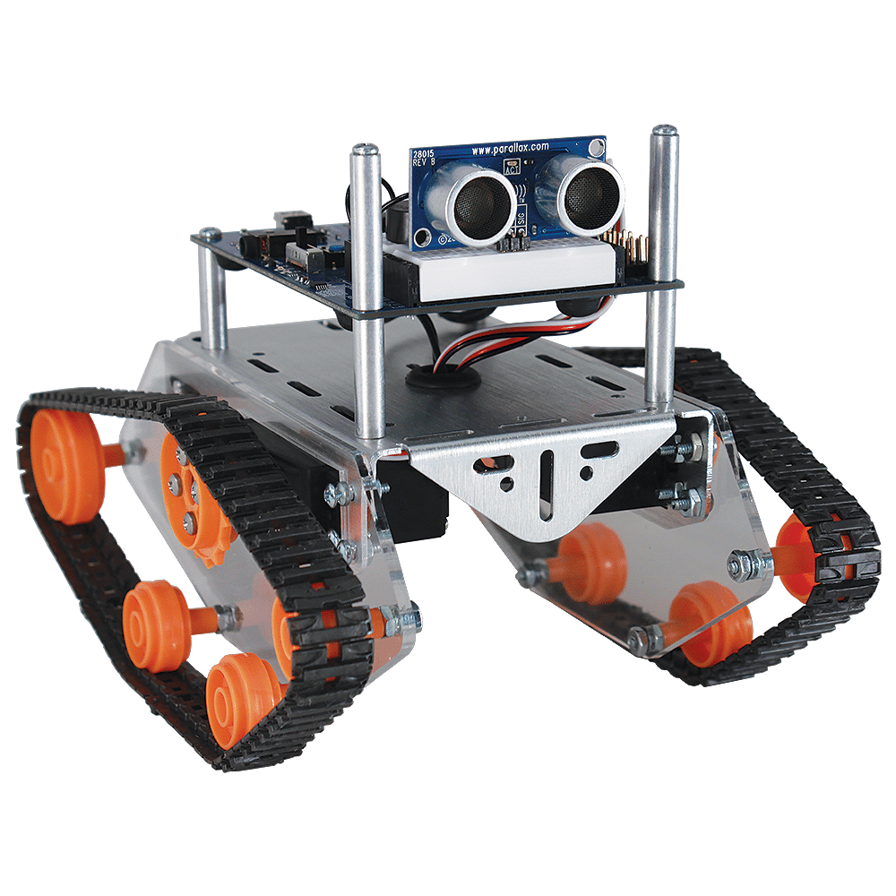
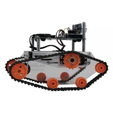

<div class="textcontainer">
<br></br>
<h3>Week 1: Final Project Proposal</h3>
<h4>Idea 1 : Study Buddy</h4>
<p class = "margin"></p>
<p>I want to create a little cute creature (maybe in the shape of a sloth! or a bug with googly eyes)
that is a physical productivity buddy.</p>
<p>It is in the shape of a container that can fit your phone with a little light and button on its head.
When you click the button, the light turns red, and it walks away with your phone.</p>
<p>I'm not sure about how this would work, but I want it to sense to make sure there is surface in front of
it before walking, otherwise it changes directions. If this is too complicated, I just won't do this part.</p>
<p>Then, after some amount of time (maybe 20 minutes), the light turns green and it walks back to your
computer.</p>
<p>I'm also not sure if this part is possible, but maybe it comes
with another portion which it can track a back path to.
You could have this other device near you, and
after 20 minutes, the little creature could return to you.</p>
<p>I am envisioning something like this in terms of the treads and place to hold phon. There will be a stabler place to hold
the phone and ideally the actual robot looks like a specific animal.</p>


</div>